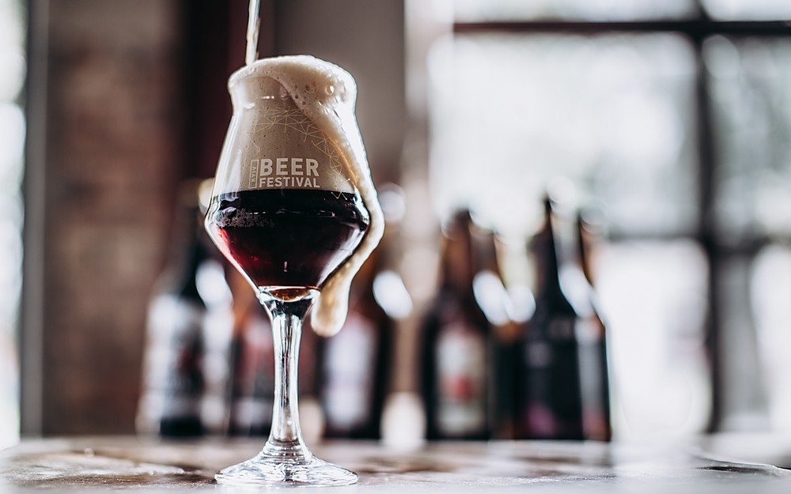
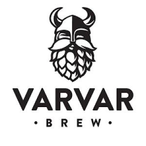
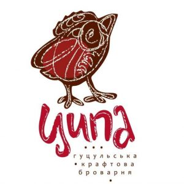
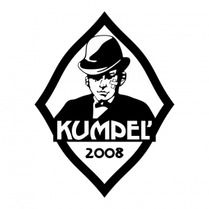
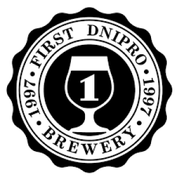
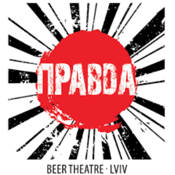
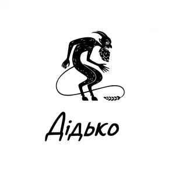

Найкраще українське крафтове пиво

Крафтове пиво – це хмільний напій, зварений вручну, не в
промислових масштабах. Найчастіше це авторські смаки: підкопчені,
кавунові, брусничні,
малинові.
Крафтові пивоварні України вирізняються тим, що варять особливі
сорти пива, які мають свій власний ринок для збуту.
Більшість продукції
не реалізується у великих супермаркетах і
торгових точках. Їх можна придбати в індивідуальному порядку у
замовника, або в спеціалізованих місцях
продажу, власних пабах і ресторанах.
Топ крафтових пивоварень в Україні
Varvar

Ця пивоварня орієнтована на американський стиль крафту. Вона на
даний момент є лідером і вже була учасником
кількох закордонних пивних виставок. Найсильнішим сортом пивоварні є
Milk
Stout
– темний крафт англійського
стилю з додаванням лактози, що позбавляє пиво
гіркоти
при обсмажуванні солоду.
-
Популярні позиціі:
- Two Sides
- Back to Black
- Golden Ale
- Milk Stout
- Ipanema
- Hoppy Lager
- Blanche de Blanche
- Captain Salt
- Doppelsticke
- Equinox IPA
Ципа

Найкраща українська пивоварня за версією рейтингу Rate Beer Best.
Оскільки Ципа розташована у високогірному
Рахівському районі, де вода для пива надходить із мінеральних
джерел.
-
Популярні позиціі:
- Ципа 380
- Ципа 220
- Ципа у Малині
- Ципа Gutsul IPA
- Ципа ДаблКопчена
- Ципа Вночі
- Ципа Біла
- Ципа Самотня
- Свидовець
Кумпель

Крафтове пиво, яке вариться на двох власних міні-пивоварнях за
авторськими рецептурами від головного броварника
Тараса Фалика. Одна з пивоварень розташована прямо в
ресторані-пивоварні “Кумпель”, друга розташована окремо
від ресторану.
-
Популярні позиціі:
- India Pale Ale світлий
- India Pale Ale темний
- Rye Stout
- Mosaic
- Hoppy Lager
- Weizenbock
- Schwarzbier
K & F Brewery
Ця пивоварня вирізняється тим, що деякі ексклюзивні сорти варяться
невеликими партіями в домашніх умовах,
а обсяг добового варіння простіших сортів доходить до 1000 літрів на
добу і варяться вони на потужностях
запорізької міні-пивоварні KronSbeeR.
-
Популярні позиціі:
- DUX Imperial Stout
- Drinking Like A Fish Baltic Porter
- Pine Pincer Gose
- Blueberry Black IPA (CAN)
- Drunken Monkey IPA
- St.Spiritus Quadrupel
First Dnipro Brewery

Виробник бере активну участь у пивних фестивалях по всій Україні. Ба
більше, вони активно ведуть свій відеоблог,
тож від них можна детально дізнатися про індустрію пивоваріння
загалом. Загалом, варять понад десять смаків пива.
-
Популярні позиціі:
- WTF #3/1+1
- LUCK A.P.A.
- Contact Show #1
- Funk
- ПУАРО / Poirot
Театр пива Правда

Ця броварня цікава не лише своїм пивом, а й його назвами із серії:
Putin Huilo, Obama Hope, Frau Ribbentrop тощо.
Але фахівці
відзначають, що візитною карткою пивоварні є темний
ель
“Львівська весна”, найкраще вітчизняне
пиво за версією
світового пивного рейтингу Rate Beer Best.
-
Популярні позиціі:
- Born To Be Wild
- American Wheat
- Зеник зі Львова
- 1716
- Lviv IPA
- Червоні очі
- Obama Hope
Copper Head. Beer Workshop
Пивоварня Copper Head. Beer Workshop працює з 2016 року. Тут
встановлено обладнання відомого угорського
виробника, за допомогою якого готується пиво найвищої якості.
-
Популярні позиціі:
- IPA
- Oatmeal Stout
- West Coast Blonde
- Wheat Beer
- Pilsner Franko
- Copper Head Barley Wine
- Belgian Golden Strong Ale
- Dry Stout
Collider Brewery
Ідейні натхненники та власники цієї броварні є піонерами крафту в
Україні, оскільки саме вони першими зварили
2012 року Indian
Pale Ale. Пивоварня є найбільш експериментаторською та інноваційною.
Тут варять один із
найщільніших (31%) крафтових пивних напоїв
у країні.
-
Популярні позиціі:
- That Very Indian English IPA
- De Smedt Asphalt Belgium Pale Ale
- Affectionate Krampus Imperial Stout
Underwood Brewery
Київська незалежна крафтова пивоварня, заснована 2017 року командою
ентузіастів, яких об’єднала любов до
класного пива. Пріоритети
компанії: висока якість, стабільність продукту, експериментальні
смаки, найкращі інгредієнти.
-
Популярні позиціі:
- Kyiv Lager
- Deutsches Weissbier
- Blond Ale
- Lime Saison
- Sauvignon Saison
- IPA
- DIPA
- Milky Mango
- Coco Milk
- Imperial Stout
Bierwelle
Мають дуже цікаві позиції та відходять від стандартних смаків
крафтового пива. Пивоварня може здивувати
освіжаючим світлим елем, африканським хмільним лагером, густим
стаутом, а також пивом із конопель,
кропиви та ще багатьох
рослин.
-
Популярні позиціі:
- ORIGINAL
- HONIGBIER
- GOLDEN ALE
- MOZAMBIK
- MILK STOUT
- WEISSBIER
- AMBER
- BITTER
- TEN 10
- DUNKEL
MadBrewlads Craft Company
Одна з перших компаній України з виробництва крафтового пива. За час
роботи з 2013 року стала однією
з найбільш впізнаваних і затребуваних у цьому сегменті. Пивоварня
пропонує лінійку розливних сортів,
які найбільше підходять для знайомства з крафтовою пивною
індустрією.
-
Популярні позиціі:
- MAD BLANCHE
- MAD STOUT
- MAD GOLDEN
- MAD IPA
- MAD SOUR
White Rabbit
Славиться унікальними, ні на що не схожими рецептами крафтового
пива. Виробник абсолютно не витрачає
грошей на рекламу і маркетинг. Найкращим пивом, на думку
споживачів-криворіжців, є пиво Lupulin –
американський IPA, з
рекордною гіркотою серед українського крафту.
-
Популярні позиціі:
- Lupulin
- San Diego
- 710
- Shadow
- Red Mine IPA
- First One APA
- 720 Imperial Stout
- Mad Hatter
- Machete
- Passito Ale
- BUNNY HOP
- Pumpkin Ale
- Milk Stout
Дідько

Київська пивоварня чіпляє вже однією назвою. А той, хто куштує їхнє
пиво – зачепиться за цей продукт назавжди.
Пивовари справжні експериментатори. Цікаві поєднання інгредієнтів
дають їм можливість відкривати все нові й нові
сорти крафтового пива.
-
Популярні позиціі:
- Memento Mori
- Шишки
- Double Trouble
- Tabasco
- Warlord
- Аж Сльози
- Travmato
- Clurichaun
- Sweet Shit “Kiwi”
- Жесть
- Cow Love
Andrii’s Craft Brewery
Крафтове пиво, зварене пивоварами, “відпочиває” в пляшках від одного
до кількох місяців. Усі сорти пива зварені
тільки з натуральної сировини і з натуральними добавками.
-
Популярні позиціі:
- A.P.A. Cascade
- Cow on Drugs
- 20
- Black Hole
- Wormwood Gruit Ale
- Brown Porter
- Black Forest
- Oatmeal Stout
- Brut IPA
- Grapefruit Milkshake
- Peach Milkshake
- Lemon-Vanilla Milkshake
Volta brewery
Пивоварню засновано 2017 року. Це новачок у пивоварінні, однак,
пивоварня швидко набирає обертів. Вони
також доставляють свою продукцію в будь-яку точку України.
-
Популярні позиціі:
- Комета IPA
- Turbo IPA
- Sweet 18
- Haze Blaze
- Salted Caramel (Солона Карамель)
- New School IPA
- Ice Cream Stout
- Double IPA
- Woodheart
- Smoked Orange Cake
- Imperial Coconut Stout
- Blackmail
Ten Men Brewery
Ten Men Brewery випускає до десятка постійних класичних сортів і
нові лімітовані сорти щомісяця. З 24.02.2022
пивоварний завод окупований виродками з Росії. Тому зараз варять
пиво на території інших заводів, орендуючи
їхнє обладнання.
-
Популярні позиціі:
- Drive&Dive IPA
- Boom 100!
- Moloko Stout
- Ten Men IPA
- BERRY SMOOTHIE: MBR
- NOT FOR BREAKFAST: BLUEBERRY CHEESECAKE